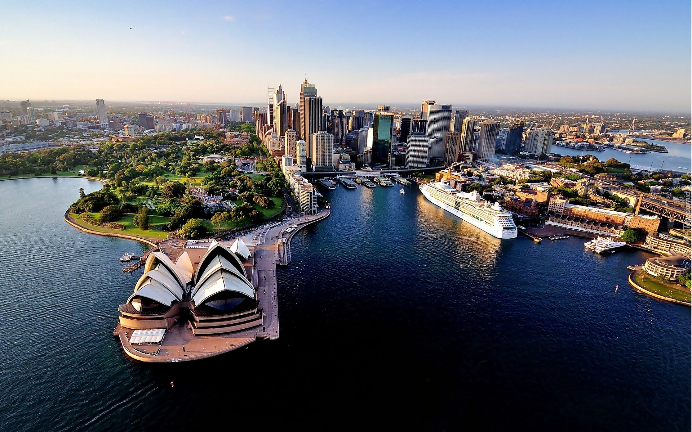

Нью-Йорк

Нью-Йорк — город, о котором, кажется, знают все на планете. Если кто-то вдруг упоминает словосочетание «столица мира», то первым в голове образованного человека наверняка всплывет имя этого мегаполиса на восточном побережье Соединенных Штатов.
Сидней
 Сидней входит в список крупнейших городов мира, является самым населенным городом Австралии и одним из лучших мест на планете для проживания. Сидней — крупнейший город самого маленького и, пожалуй, самого удивительного материка на Земле.
Лондон

Лондон — столица Великобритании и один из величайших городов истории и современности. В Вестминстере работает правительство, здесь же расположены Букингемский дворец, самые лучшие национальные галереи, музеи, театры и клубы. Лондон бесконечно меняется: из римской, а затем раннесредневековой крепости он превратился в крупный город